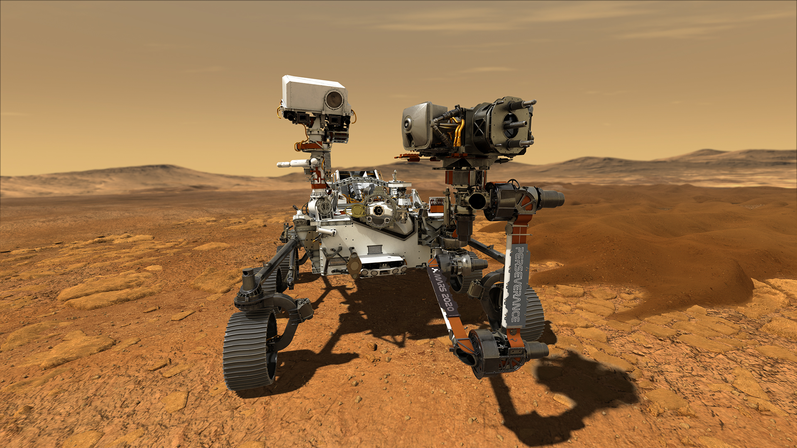

- thumbnail.jpg)
3:22
Nasa Mission - Life In The Oceans Of Europa!
NASA's mission to explore Europa, one of Jupiter's moons,
aims to unlock the mysteries of its subsurface ocean and discover potential
indicators of extraterrestrial life, advancing our search for life beyond Earth.

10:34
Earth's Evolution in 10 Minutes
In the past few billion years, Earth has been pummeled by asteroids,
crashed into other planets and frozen over several times.
Not to mention being ruled by all kinds of crazy lifeforms.

3:30
I Jumped From Space
In 2012 Felix Baumgartner took a helium balloon into the stratosphere and skydived back to earth in a specially made space suit.
Felix reflects on his achievement and shares what it really felt like to jump from the edge of space.
2:02
NASA’s Artemis I Moon Mission
Ride along with NASA’s Orion capsule on the Artemis I mission around the Moon and back.
3:06
The Astronauts Who Will Fly Around The Moon
Artemis II will be NASA’s first crewed flight test of the Space
Launch System rocket and Orion spacecraft around the Moon to
verify today’s capabilities for humans to explore deep space
and pave the way for long-term exploration and science on the lunar surface.
6:32
How to Get to Mars.
In 2006, NASA's rover missions, including Spirit and Opportunity,
were actively exploring the surface of Mars,
conducting scientific experiments and sending back valuable data.

3:10
NASA's Mars 2020 Perseverance Rover
The Mars 2020 mission, launched by NASA, successfully landed the Perseverance rover on Mars in February 18, 2021,
aiming to search for signs of past microbial life and collect samples for future return to Earth.

0:56
Rotation Period and speeds
Rotation Period and speeds of Earth and Other Solar System Planets.

0:25
Reality of our solar system
The solar system is a collection of celestial bodies,
including the Sun, planets, moons, asteroids, and comets,
bound together by gravity.

6:51
Mars Exploration Zones
This concept animation shows just one of many potential concepts for how the first
human landing site on Mars might evolve throughout
the course of multiple human expeditions to the Red Planet over a decade or more.

1:58
How Do We Communicate With Spacecraft?
How Do We Communicate With Spacecraft? We Asked a NASA Expert.
We communicate with spacecraft primarily through radio waves,
but advancements in laser communications technology are enabling
faster and more data-intensive communication over longer distances

11:08
NASA Has Just Discovered!
NASA Has Just Discovered a Planet That Is Even More Suitable for Life than Earth!
The search for other life forms is the main goal of many astronomical research projects.

4:39
All Planet Sounds From Space!
The planets in our solar system do not produce sound in the traditional sense,
as sound requires a medium to propagate through, and space is mostly a vacuum devoid of such a medium,
making space inherently silent.
0:55
NASA's DART Mission to an Asteroid
On Sept. 26, 2022, NASA's Double Asteroid Redirection Test (DART)
spacecraft will intentionally crash into a small asteroid, Dimorphos,
in a first-ever test of planetary defense, should we ever need it.

1:24
Can You Cry In Space?
ISS commander Chris Hadfield demonstrates
what happens to tears if they start 'falling' in Space.

1:52
Water Recycling on the ISS
Water is precious on the International Space Station.
CSA Astronaut Chris Hadfield demonstrates
how the Water Recovery System preserves this resource
to make the ISS a self-sustaining environment.